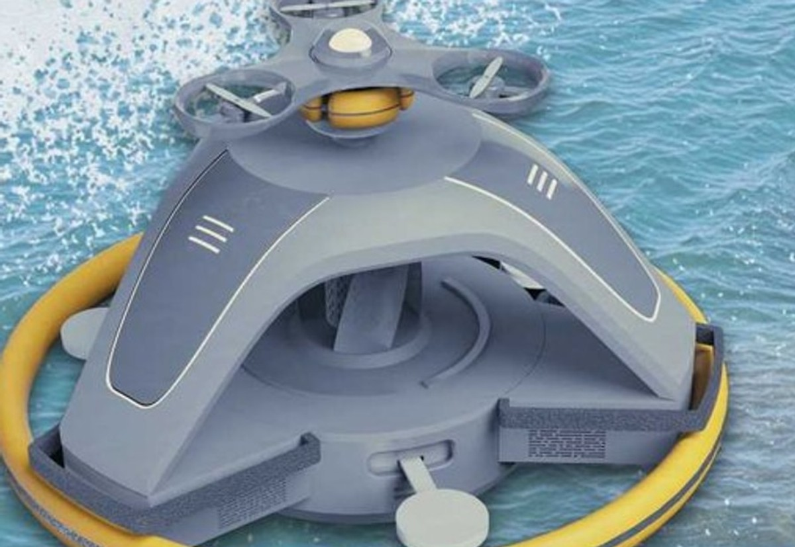
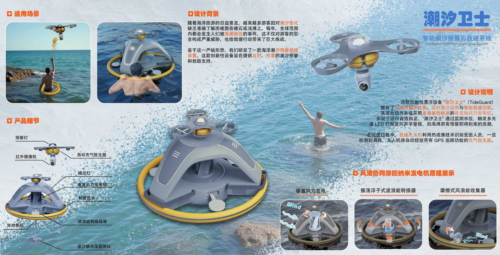

Challenge
潮汐变化不容易被游客直观判断，传统提示牌无法实时预警，也难以与救援端形成联动。
公共安全设施设计 · 智能潮汐预警系统
面向海岸、潮间带和滩涂被困场景的智能预警救援系统。新版页面不再直接拼贴比赛展板，而是把项目拆成风险判断、产品系统、能源逻辑和救援流程，让作品更像一份可浏览、可理解、可评审的网页作品集。

潮汐变化不容易被游客直观判断，传统提示牌无法实时预警，也难以与救援端形成联动。
完成公共设施造型、漂浮节点、预警交互、救援装置和风浪自供能逻辑的整体表达。
把“看不见的潮汐风险”转译成游客能看懂、管理者能响应、救援端能执行的系统。
展板只作为归档资料，核心内容改用网页原生图解呈现，避免视觉碎片和阅读负担。
Risk Translation
海岸风险往往来自多个因素叠加：水位上涨、距离岸线变远、游客误判、通信延迟和救援到达时间。潮汐卫士需要在危险真正发生前完成提醒，并在高风险时把位置、警示和救援动作连接起来。
水位、风浪、距离与区域状态持续采集。
把潮汐变化转换为游客能理解的风险等级。
触发灯光、声光提示、无人机巡航与救生圈投放。
System Flow
漂浮节点感知水位与环境变化，形成基础风险输入。
通过高识别色、警示灯、提示屏和声光提醒降低误判。
无人机作为移动视角，辅助识别被困人员与危险位置。
自动充气救生圈成为被困者等待专业救援前的第一支撑。
将位置与状态同步给管理端，缩短救援判断和调度时间。
Product Anatomy
灰色主体建立设备感，黄色漂浮基座强化安全联想；上方无人机平台承担巡航与救援入口，底部漂浮结构让设备可以长期部署在海岸风险区域。
在海面环境中保持可见度，并形成安全救援产品的视觉记忆点。
让固定设施具备移动巡航能力，补足岸线盲区。
面向真实被困场景，提供可抓握、可等待、可定位的救援支撑。
Energy Strategy
利用海岸持续风环境，为灯光、通信和监测模块提供基础能源。
漂浮结构随浪运动，将环境扰动转化为设备持续运行的补充能源。
能源系统服务于预警灯、摄像识别、定位回传和救援联动。
Scenario Story
这一段先用网页图解把使用过程讲清楚。后续如果你能补充干净的海岸部署效果图、管理端界面或救援分镜，这里可以继续升级成更完整的动态案例。
Next Material
白底、海面场景、三视图或爆炸图都可以，最好不要带展板文字。
游客遇险、设备预警、无人机巡航、救生圈投放、管理端响应。
用于展示潮位等级、预警状态、被困点定位和救援调度信息。
Board Archive

现在的阅读顺序先讲清项目判断，再让访客按需查看原始展板信息。这样既保留你的比赛资料，也避免作品集页面变成展板截图集合。